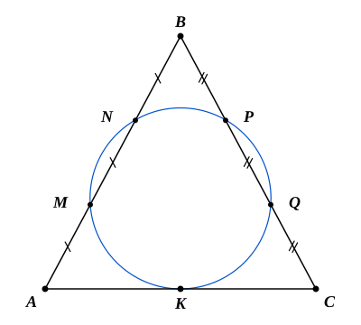
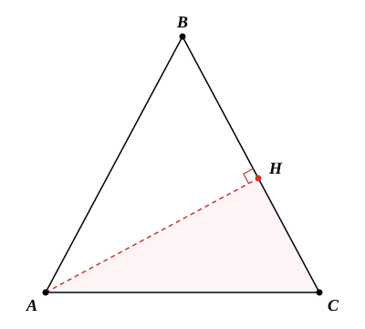

Условие. Окружность касается стороны $AC$ остроугольного треугольника $ABC$ в точке $K$ и делит каждую из сторон $AB$ и $BC$ на три равные части. а) Докажите, что треугольник $ABC$ равнобедренный. б) Найдите, в каком отношении высота этого треугольника делит сторону $BC$.
Решение:
а) Пусть $M, N$ — точки пересечения окружности с $AB$, а $P, Q$ — с $BC$. По условию $AM = MN = NB = x$ и $BP = PQ = QC = y$.
По теореме о секущих из точки $B$:
$$ BM \cdot BN = BP \cdot BQ \implies 2x \cdot x = 2y \cdot y \implies x = y. $$
Следовательно, $AB = 3x = 3y = BC$. Треугольник $ABC$ — равнобедренный. $\blacksquare$

Рис. 1
б) По теореме о касательной и секущей для точек $A$ и $C$:
$$ AK^2 = AM \cdot AN = 2x^2 \implies AK = x\sqrt{2}, $$
$$ CK^2 = CQ \cdot CP = 2x^2 \implies CK = x\sqrt{2}. $$
Следовательно, $AK = CK$, точка $K$ — середина $AC$. В равнобедренном $\triangle ABC$ медиана $BK$ является высотой.
В прямоугольном $\triangle BKC$:
$$ \cos C = \frac{CK}{BC} = \frac{x\sqrt{2}}{3x} = \frac{\sqrt{2}}{3}. $$

Рис. 2
Пусть $AH \perp BC$. В прямоугольном $\triangle AHC$:
$$ CH = AC \cos C = 2x\sqrt{2} \cdot \frac{\sqrt{2}}{3} = \frac{4x}{3}. $$
Тогда оставшаяся часть стороны:
$$ BH = BC - CH = 3x - \frac{4x}{3} = \frac{5x}{3}. $$
Искомое отношение:
$$ \frac{BH}{HC} = \frac{5x/3}{4x/3} = \frac{5}{4}. $$